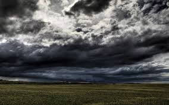
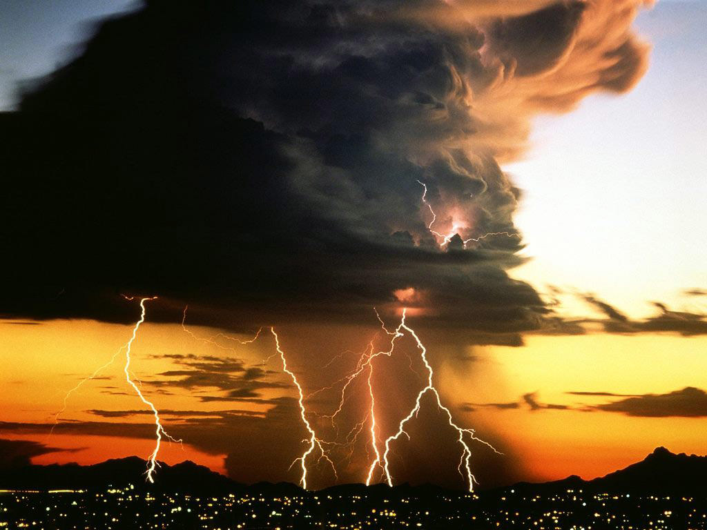
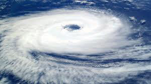

Weather

Clouds and weather forecasting
The identification and reporting of clouds contribute to the process of weather forecasting. Satellite pictures used in conjunction with the cloud symbols plotted on weather maps provide the forecaster with important information about conditions within the troposphere and the weather systems that form as a result.
Weather maps plotted and analyzed at weather forecasting centers employ special symbols to denote various cloud families, genera, species, varieties, mutations, and cloud movements that are considered important to identify conditions in the troposphere that will assist in preparing the forecasts. The cloud symbols are translated from numerical codes included with other meteorological data that make up the contents of international synoptic messages transmitted at regular intervals by professionally trained staff at major weather stations. In a couple of cases, an entire genus like cirrocumulus is represented by one cloud symbol, regardless of species, varieties, or any other considerations. In general though, the codes and their symbols are used to identify cloud types at the species level. A number of varieties and supplementary features are also deemed important enough to have their own weather map symbols. For the sake of economy, a particular genus, species, or variety may share a numerical reporting code and symbol with another similar cloud type. Sometimes, a separate symbol is used to indicate whether or not a particular genus has transformed or emerged from a mother cloud of another genus, or is increasing in amount or invading the sky (usually in the form of parallel bands in a radiatus configuration) ahead of an approaching weather disturbance.
Warm front or low-pressure area
The presence of significant high cirrus or cirrostratus cloud cover indicates an organized low-pressure disturbance or an associated warm front is about 300 km away from the point of observation. Clouds associated with warm fronts tend to be mostly stratiform in structure at all altitude levels. However, if cirrocumulus also appears, there is greater airmass instability arriving with the front which increases the risk that thunderstorms may accompany the system. When these high clouds progressively invade the sky and the barometric pressure begins to fall, precipitation associated with the disturbance is likely about 24 to 36 hours away. A thickening and lowering of cirrostratus into mid-level altostratus is a good sign the warm front or low has moved closer and precipitation may begin within 24 hours. A further thickening of the altostratus is often accompanied by virga and the arrival of precipitation is imminent. The cloud layer achieves significant vertical extent as it lowers and changes into nimbostratus. Rain or snow begins to reach surface level at the beginning of a precipitation event that can last up to 36 hours depending and the size of the weather system and its speed of movement. As the low and the warm front pass, the nimbostratus thins out into low stratus and the precipitation tapers off.
Cold Front
A cold front tends to give less warning of its approach because it usually moves faster than a warm front and has a narrower band of clouds and weather. If the cold front is active enough to produce thunderstorms, anvil cirrus clouds may spread ahead of the front as a warning of its approach. The other cloud types associated with a cold front depend on atmospheric conditions such as air mass stability and wind shear, but are mostly cumuliform or stratocumuliform, with mid-level altocumulus giving way to lower stratocumulus and intermittent light precipitation if there is only slight airmass instability. With significant instability, vertically developed cumulus or cumulonimbus with showers and thunderstorms will form along the front.
High-pressure area
After the passage of the front, the sky usually clears as high pressure builds in behind the system, although significant amounts of cumulus or stratocumulus, often in the form of long bands called cloud streets may persist if the air mass behind the front remains humid. Small and unchanging amounts of cumulus or cirrus clouds in an otherwise clear sky are usually indications of continuing fair weather as long as the barometric pressure remains comparatively high
Rainmaking Bacteria
There is evidence that clouds, especially in the weather-making troposphere, contain biological ice nuclei that may play a key role in the formation of precipitation. Bioprecipitation, the concept of rain-making bacteria, was proposed by David Sands from Bozeman Campus, Montana State University, USA. Such microbes – called ice nucleators – are found in rain, snow, and hail throughout the world. These bacteria may be part of a constant feedback between terrestrial ecosystems and tropospheric clouds and may even have evolved the ability to promote rainstorms as a means of dispersal. They may rely on the rainfall to spread to new habitats, much as some plants rely on windblown pollen grains
Tornado
A tornado is a violently rotating column of air that is in contact with both the surface of the earth and a cumulonimbus cloud or, in rare cases, the base of a cumulus cloud. They are often referred to as twisters or cyclones, although the word cyclone is used in meteorology, in a wider sense, to name any closed low pressure circulation. Tornadoes come in many shapes and sizes, but they are typically in the form of a visible condensation funnel, whose narrow end touches the earth and is often encircled by a cloud of debris and dust. Most tornadoes have wind speeds less than 110 miles per hour (177 km/h), are about 250 feet (76 m) across, and travel a few miles (several kilometers) before dissipating. The most extreme tornadoes can attain wind speeds of more than 300 miles per hour (483 km/h), stretch more than two miles (3.2 km) across, and stay on the ground for dozens of miles (more than 100 km). Various types of tornadoes include the landspout, multiple vortex tornado, and waterspout. Waterspouts are characterized by a spiraling funnel-shaped wind current, connecting to a large cumulus or cumulonimbus cloud. They are generally classified as non-supercellular tornadoes that develop over bodies of water, but there is disagreement over whether to classify them as true tornadoes. These spiraling columns of air frequently develop in tropical areas close to the equator, and are less common at high latitudes. Other tornado-like phenomena that exist in nature include the gustnado, dust devil, fire whirls, and steam devil; downbursts are frequently confused with tornadoes, though their action is dissimilar.
Precipitation
Cumulus humilis clouds usually indicate fair weather. Cumulus mediocris clouds are similar, except that they have some vertical development, which implies that they can grow into cumulus congestus or even cumulonimbus clouds, which can produce heavy rain, lightning, severe winds, hail, and even tornadoes. Cumulus congestus clouds, which appear as towers, will often grow into cumulonimbus storm clouds. They can produce precipitation. Glider pilots often pay close attention to cumulus clouds, as they can be indicators of rising air drafts or thermals underneath that can suck the plane high into the sky—a phenomenon known as cloud suck. Cumulus clouds can also produce acid rain or possibly a tornado. The acidity is largely formed by the oxidation of sulfur dioxide, the most plentiful acidifying gas, into sulfate ions. The main oxidizing compounds are hydrogen peroxide and ozone. Various nitrogen oxides can also react with hydroxide ions to form acids.
A stratus cloud can form from stratocumulus spreading out under an inversion, indicating a continuation of prolonged cloudy weather with drizzle for several hours and then an improvement as it breaks into stratocumulus. Stratus clouds can persist for days in anticyclone conditions. It is common for a stratus to form on a weak warm front, rather than the usual nimbostratus.
Thunderstorms
Thunderstorms form dense cirrus often in the shape of anvils. As the cumulonimbus cloud in a thunderstorm grows vertically, the liquid water droplets freeze when the air temperature reaches the freezing point. The anvil cloud takes its shape because the temperature inversion at the tropopause prevents the warm, moist air forming the thunderstorm from rising any higher, thus creating the flat top.[18] In the tropics, these thunderstorms occasionally produce copious amounts of cirrus from their anvils. High-altitude winds commonly push this dense mat out into an anvil shape that stretches downwind as much as several kilometers. Individual cirrus cloud formations can be the remnants of anvil clouds formed by thunderstorms. In the dissipating stage of a cumulonimbus cloud, when the normal column rising up to the anvil has evaporated or dissipated, the mat of cirrus in the anvil is all that is left.
Contrails are a manmade type of cirrus cloud formed when water vapor from the exhaust of a jet engine condenses on particles, which come from either the surrounding air or the exhaust itself, and freezes, leaving behind a visible trail. The exhaust can also trigger the formation of cirrus by providing ice nuclei when there is an insufficient naturally-occurring supply in the atmosphere. One of the environmental impacts of aviation is that persistent contrails can form into large mats of cirrus, and increased air traffic has been implicated as one possible cause of the increasing frequency and amount of cirrus cloud in Earth's atmosphere.
Cyclones
Cirrus forms from tropical cyclones, and is commonly seen fanning out from the eyewalls of hurricanes. A large shield of cirrus and cirrostratus typically accompanies the high altitude outflow of hurricanes or typhoons, and these can make the underlying rain bands—and sometimes even the eye—difficult to detect in satellite photographs.
